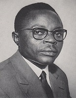
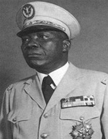
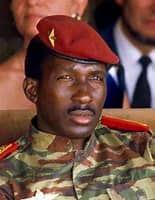
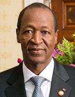
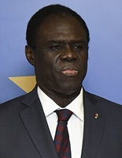
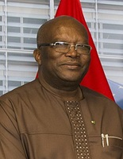

Burkina Faso gained independence from France on August 5, 1960. The country was initially named Upper Volta but was renamed Burkina Faso in 1984 by then-President Thomas Sankara, which means "Land of Honest People" in the local Mossi language.
Since gaining it's independence in 1960, Burkina Faso in it's 65 years has seen 7 different leaders try to steer the country in thye right direction.
Dependence on cotton and livestock exports, which are vulnarable to droughts and price flacuations. These were some of the factors to slow grwoth for about 10 years.
President Maurice Yaméogo, his is authoritarian rule led to economic struggles, sparking a 1966 coup by Sangoulé Lamizana.
Lamizana lead the country in the midst of a number of coups, until a coup lead by Thomas Sankara in 1983 ptoved fairly significant for the country.
Sankara's presidency was marked by ambitious reforms, but he was assassinated in 1987, leading to Blaise Compaoré's long rule.
Compaoré's presidency was characterized by economic growth but also by political repression, leading to his ousting in 2014.
Michel Kafando briefly took over but was overthrown in 2015, leading to Roch Marc Christian Kaboré's presidency.
Kaboré's presidency faced challenges from jihadist violence, leading to his ousting in 2022 by Paul-Henri Sandaogo Damiba.
Damiba's rule was short-lived, as he was overthrown in 2023 by Ibrahim Traoré, who is currently the president.
Burkina Faso's history is marked by a series of coups and political instability, with leaders often facing challenges from both internal and external forces. The country has struggled with issues such as poverty, corruption, and security threats, particularly from jihadist groups in recent years.
Despite these challenges, Burkina Faso has made significant strides in areas such as education
These changes in leadership reflect the country's ongoing struggles with political instability, economic challenges, and security issues.
Here is a link to a short video of the various changes in leadership in Burkina Faso
Coups
| Pictures |
President |
Years in Office |
Notes |
Term |
|  |
Maurice Yaméogo |
1960-1966 |
Overthrown |
6 Years |
|  |
Sangoulé Lamizana |
1966-1980 |
Overthrown |
14 Years |
|  |
Sankara Thomas |
1983-1987 |
Assassinated |
4 Years |
|  |
Blaise Compaoré |
1987-2014 |
Fled |
27 Years |
|  |
Michel Kafando |
2014-2015 |
Overthrown |
1 Year |
|  |
Roch Marc Christian Kaboré |
2015-2022 |
Overthrown |
7 Years |
 |
Paul-Henri Sandaogo Damiba |
2022-2023 |
Overthrown |
1 Year |
 |
Ibrahim Traoré |
2023-Present |
Current President |
In office |